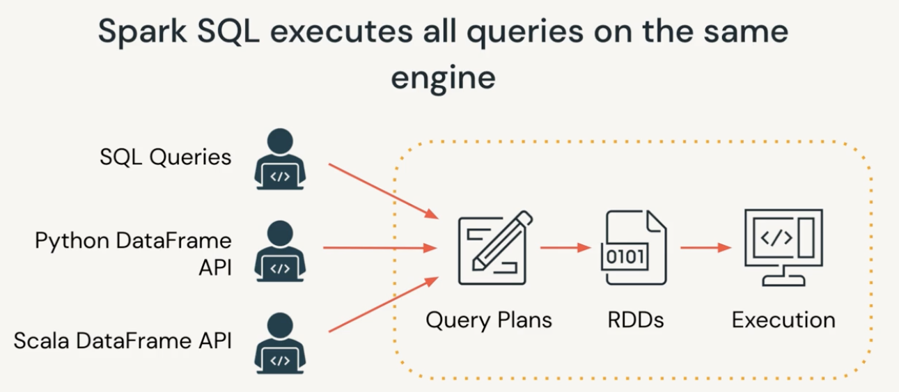
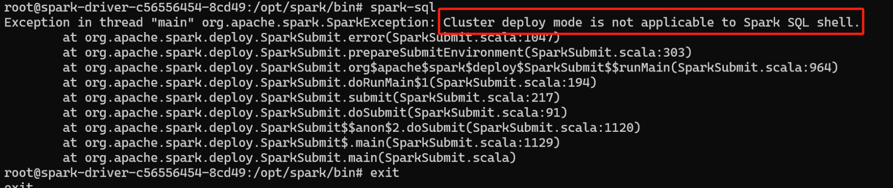
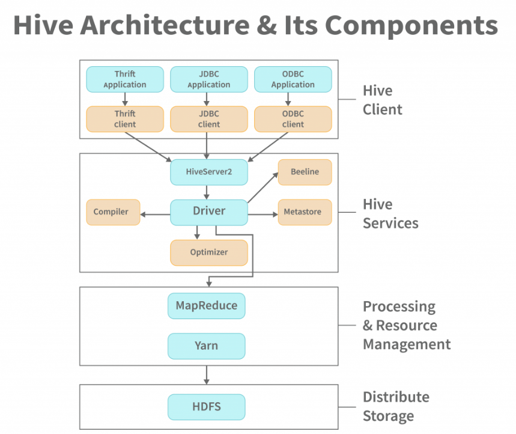
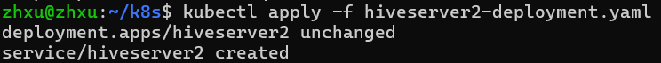
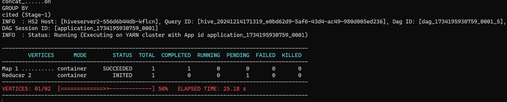
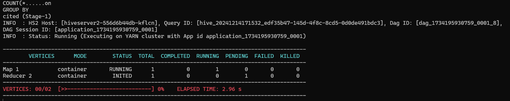
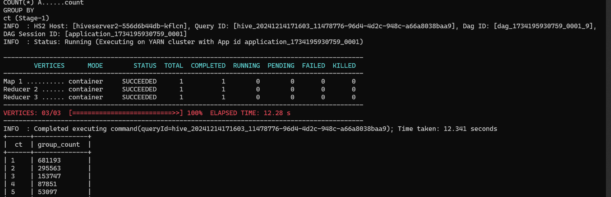
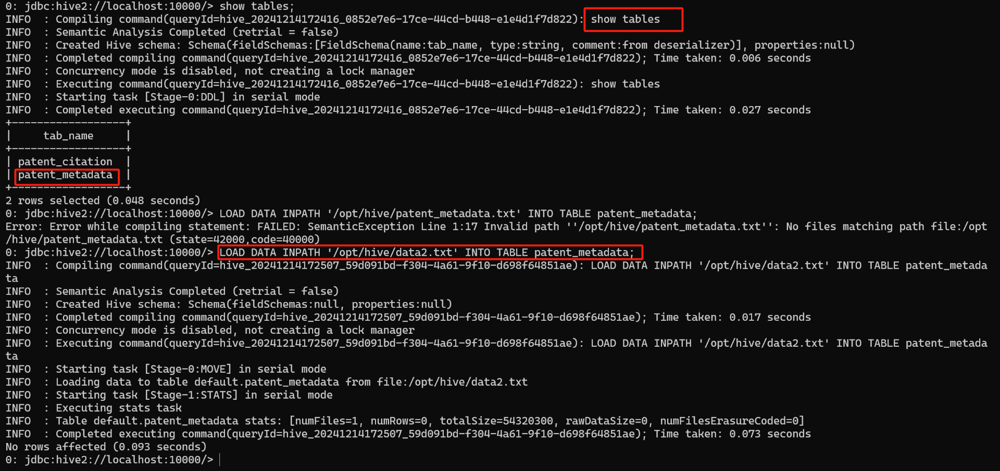
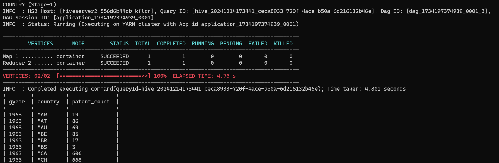

一、SparkSQL
1、简介
Spark SQL 是 Apache Spark 提供的一个模块，用于处理结构化数据，它使得用户能够在 Spark 上执行 SQL 查询、访问数据源、以及将 Spark 与 SQL 生态系统（如 Hive）无缝集成。
2、SparkSQL的核心概念
（1）Catalyst 查询优化器
- Catalyst 是 Spark SQL 的核心组件之一，它是一个通用的查询优化器，用于优化查询计划。优化过程可以分为下面几个阶段：
- 解析：将 SQL 查询解析成逻辑查询计划
- 分析：将逻辑查询计划分析成物理查询计划
- 优化：使用多种规则对查询计划进行优化（例如，投影下推、谓词下推等）
- 生成代码：根据物理计划生成 Java 字节码进行执行
（2）Tungsten 执行引擎
- Tungsten 是 Spark SQL 的执行引擎，它主要关注物理执行优化，旨在通过内存管理、代码生成和硬件优化等技术提升 Spark SQL 的执行效率。
（3）DataFrame 和 DataSet
- DataFrame：是 Spark 中的一个不可变的分布式数据集，它类似于关系型数据库中的表或数据框。DataFrame API 提供了基于 SQL 查询的数据操作接口，支持对结构化数据进行查询、过滤、聚合等操作。
- DataSet：是 DataFrame 的强类型版本，它结合了 RDD 和 DataFrame 的优点，能够提供编译时类型检查，同时支持 SQL 查询优化。
3、使用minikube部署SparkSQL
（1）由于sparksql不适用于cluster模式，因此单独建立一个local模式的pod来进行实验，这个local模式的spark已经在上面建立spark集群时一并建立了
（2）使用SparkSQL进行查询
- 复制数据原文件到spark-local所在的pod中，下面命令中需要替换为自己的spark-local所在的pod名
kubectl cp data1.txt spark-local-5549987b6c-pk5vx:/opt/spark/work-dir
kubectl cp data2.txt spark-local-5549987b6c-pk5vx:/opt/spark/work-dir
- 进入spark-local所在的pod
kubectl exec -it spark-local-5549987b6c-pk5vx -- bash
- 启动sparksql
spark-sql
（3）进行专利文献数据查询cite75_99.txt
- 建立表格并导入文件数据
CREATE TABLE patents (
CITING STRING,
CITED STRING
)
USING csv
OPTIONS (path '/opt/spark/work-dir/data1.txt', header 'true', delimiter ',');
- 查询一 被引用列表
CREATE TABLE citation_results
USING csv
OPTIONS (
path '/opt/spark/work-dir/output/citation_results',
header 'true'
) AS
SELECT
CITED,
CONCAT_WS(',', COLLECT_LIST(CITING)) AS CITING_AGG
FROM
patents
GROUP BY
CITED;
- 查询二 被引用次数
CREATE TABLE citation_count_results
USING csv
OPTIONS (
path '/opt/spark/work-dir/output/citation_count_results',
header 'true'
) AS
SELECT
cited,
COUNT(*) AS citation_count
FROM
patents
GROUP BY
cited;
- 查询三 被引用次数直方图
- 先创建临时视图
CREATE OR REPLACE TEMP VIEW cite_count AS
SELECT
cited,
COUNT(*) AS ct
FROM
patents
GROUP BY
cited;
- 再进行查询
CREATE TABLE cite_count_results
USING csv
OPTIONS (
path '/opt/spark/work-dir/output/cite_count_results',
header 'true'
) AS
SELECT
ct,
COUNT(*) AS ct_count
FROM
cite_count
GROUP BY
ct;
（4）进行专利文献数据查询apat63_99.txt
- 先导入表
CREATE TABLE patent_details (
PATENT STRING,
GYEAR INT,
GDATE INT,
APPYEAR STRING,
COUNTRY STRING,
POSTATE STRING,
ASSIGNEE STRING,
ASSCODE INT,
CLAIMS STRING,
NCLASS INT,
CAT INT,
SUBCAT INT,
CMADE STRING,
CRECEIVE STRING,
RATIOCIT STRING,
GENERAL STRING,
ORIGINAL STRING,
FWDAPLAG STRING,
BCKGTLAG STRING,
SELFCTUB STRING,
SELFCTLB STRING,
SECDUPBD STRING,
SECDLWBD STRING
)
USING csv
OPTIONS (
path '/opt/spark/work-dir/data2.txt',
header 'true',
delimiter ',',
inferSchema 'true'
);
- 查询四 年份或国家专利数统计
CREATE TABLE patent_count_by_year_country
USING csv
OPTIONS (
path '/opt/spark/work-dir/output/patent_count_by_year_country',
header 'true'
) AS
SELECT
GYEAR,
COUNTRY,
COUNT(*) AS patent_count
FROM
patent_details
GROUP BY
GYEAR,
COUNTRY;
（5）所有的查询结果都以文件的形式存放在对应目录下
- 先退出sql命令行
exit;
- 再打开输出目录
cd output
- 再进入对应目录查看输出文件列表
- 进入任意一个目录中
cd citation\_results
- 可以查看到文件的具体内容如下
cat part-00000-96701e9c-2270-4f47-ac3e-2901da3ca863-c000.csv
二、Hive
1、简介
Hive是基于Hadoop的一个数据仓库工具，可以将结构化的数据文件映射为一张表，并提供类SQL查询功能。其本质是将HQL转化成MapReduce程序
2、Hive的核心概念
（1）Hive客户端
- Hive CLI——本地
- JDBC/ODBC——远程
（2）Metastore
- 是一个中心化的元数据存储，用于存储表、数据库、分区、列、数据类型等的元数据，通常使用关系型数据库（如内嵌的Derby、MySQL、PostgreSQL）来存储元数据
（3）HiveServer2
- 负责解析并处理来自客户端的SQL查询，并将查询转化为MapReduce作业或Spark作业，最后通过执行引擎将查询结果返回给客户端。它提供了JDBC和ODBC支持，使得各种外部工具（如BI工具、Java应用程序等）能够通过标准的数据库连接协议与Hive交互
- beeline是Hive的命令行客户端工具，用于连接到 HiveServer2 并执行 HiveQL 查询。它支持JDBC连接，可以通过指定JDBC URL来连接到Hive服务。
（4）Driver
- 负责接收HiveQL查询请求，并将这些请求转化为内部表示，以便进一步处理
3、使用minikube部署Hive
（1）向minikube中导入所需的镜像
minikube image load apache/hive:4.0.1
- 进入minikube查看是否导入
minikube ssh
docker images
（2）使用hiveserver2-deployment.yaml文件部署Hive
- 查看pod状态，确认已正常运行
kubectl get pods
- 使用kubectl的端口转发功能，以访问Hive的webui，这个转发命令行界面需要一直保持这个转发状态，停止转发后就无法访问webui了
kubectl port-forward deployment/hiveserver2 10002:10002
- 通过下面的url在浏览器访问Hive的webui
（3）测试Hive的功能
- 将数据文件复制进入hive的pod中。进入自己的data1.txt和data2.txt文件所在目录执行下面的命令，同时需要把下面命令中的pod名字替换成自己建立的pod名字
kubectl cp data1.txt hiveserver2-556d6b44db-tggsq:/opt/hive/
kubectl cp data2.txt hiveserver2-556d6b44db-tggsq:/opt/hive/
- 进入这个pod，同样的，需要把下面命令中的pod名字替换成自己建立的pod名字
kubectl exec -it hiveserver2-556d6b44db-fz4kp -- /bin/bash
- 在该pod内使用beeline连接hiveserver，出现下面的hive命令行就可以了
beeline -u 'jdbc:hive2://localhost:10000/'
（4）hive的基本操作
- 创建数据库
CREATE DATABASE IF NOT EXISTS example_db;
USE example_db;- 创建表
CREATE TABLE students (id INT,name STRING,age INT) PARTITIONED BY (class STRING) STORED AS PARQUET;- 添加分区
ALTER TABLE students ADD PARTITION (class='A');
ALTER TABLE students ADD PARTITION (class='B');- 插入数据
INSERT INTO TABLE students PARTITION (class='A') VALUES(1, 'Alice', 20),(2, 'Bob', 21);
INSERT INTO TABLE students PARTITION (class='B') VALUES (3, 'Charlie', 22),(4, 'David', 23);- 查看所有表
SHOW TABLES;- 查看表结构
DESCRIBE students;- 查询所有数据
SELECT * FROM students;- 查询特定分区数据
SELECT * FROM students WHERE class='A';- 进行聚合查询
SELECT class, COUNT(*) AS num_students FROM students GROUP BY class;（5）进行专利文献数据查询cite75_99.txt
- 创建表格patent_citation
CREATE TABLE patent_citation (
citing INT,
cited INT
)
ROW FORMAT DELIMITED
FIELDS TERMINATED BY ','
LINES TERMINATED BY '\n'
STORED AS TEXTFILE
TBLPROPERTIES ('skip.header.line.count'='1');
- 导入data1.txt文件中的数据
LOAD DATA INPATH '/opt/hive/data1.txt' INTO TABLE patent\_citation
- 查询一 被引用列表
SELECT
cited,
concat_ws(',', collect_set(cast(citing AS string))) AS citing_list
FROM
patent_citation
GROUP BY
cited;

- 查询二 被引用次数
SELECT
cited,
COUNT(*) AS citing_count
FROM
patent_citation
GROUP BY
cited;

- 查询三 被引用次数直方图
SELECT
ct,
COUNT(*) AS group_count
FROM (
SELECT
cited,
COUNT(*) AS ct
FROM
patent_citation
GROUP BY
cited
) cite_count
GROUP BY
ct;

（6）进行专利文献数据查询apat63_99.txt
- 创建表格patent_metadata
CREATE TABLE patent_metadata (
PATENT STRING,
GYEAR INT,
GDATE INT,
APPYEAR INT,
COUNTRY STRING,
POSTATE STRING,
ASSIGNEE STRING,
ASSCODE INT,
CLAIMS INT,
NCLASS INT,
CAT INT,
SUBCAT INT,
CMADE INT,
CRECEIVE INT,
RATIOCIT DOUBLE,
GENERAL DOUBLE,
ORIGINAL DOUBLE,
FWDAPLAG DOUBLE,
BCKGTLAG DOUBLE,
SELFCTUB DOUBLE,
SELFCTLB DOUBLE,
SECDUPBD DOUBLE,
SECDLWBD DOUBLE
)
ROW FORMAT DELIMITED
FIELDS TERMINATED BY ','
LINES TERMINATED BY '\n'
STORED AS TEXTFILE
TBLPROPERTIES ('skip.header.line.count'='1');
- 导入data2.txt文件中的数据
LOAD DATA INPATH '/opt/hive/data2.txt' INTO TABLE patent\_metadata;

- 查询四 年份或国家专利数统计
SELECT
GYEAR,
COUNTRY,
COUNT(*) AS patent_count
FROM
patent_metadata
GROUP BY
GYEAR,
COUNTRY;
